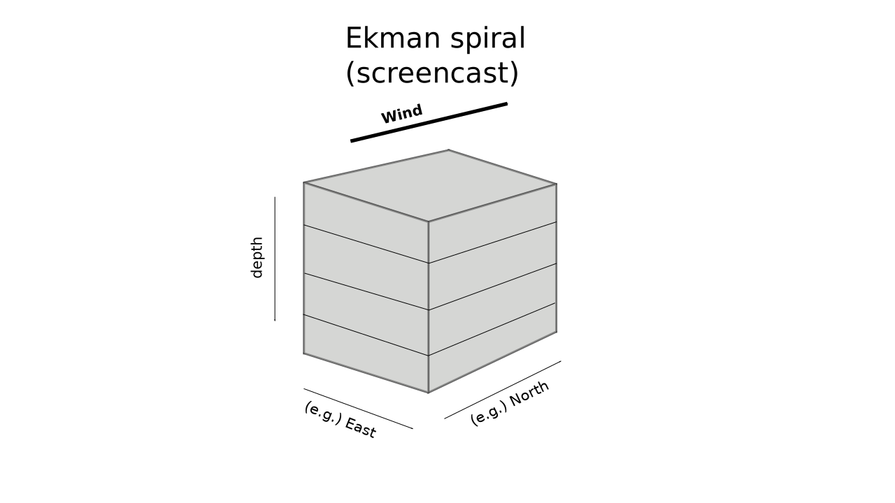

Our planet is mainly ocean

Let's just describe what we see.

What controls the basic surface distribution?
Where does the surface temperature deviate from this?
Why is the interior cooler?

We can now trace the interior water back to the surface.
And now we can now see why the interior water is cool

What direction does water move in response to surface winds?